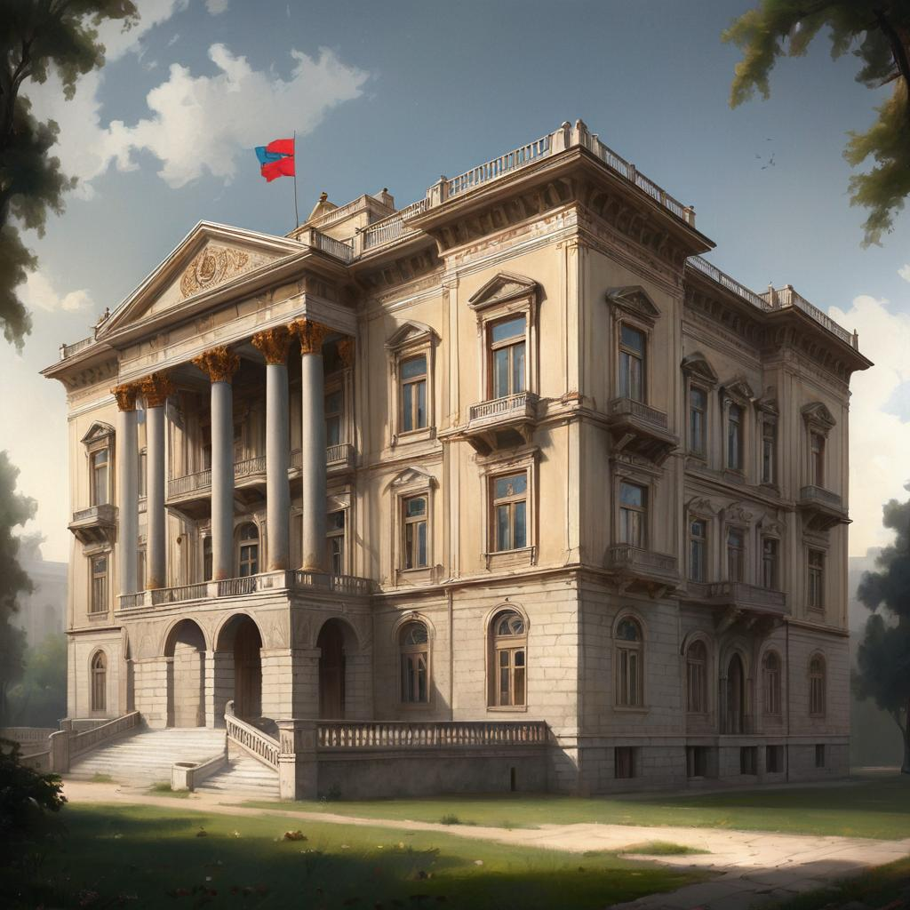

დადიანების სასახლე - სამეგრელოს მთავრების, დადიანების რეზიდენცია იყო.
ის ოდიშის მთავარმა – ლევან II დადიანმა ააშენა, მე-17 საუკუნეში. იგი
ქალაქ ზუგდიდის ცენტრში მდებარეობს.დადიანების სასახლე დღეისათვის
წარმოადგენს სახელმწიფო ისტორიულ-ეთნოგრაფიულ მუზეუმს. იგი სამეგრელოს
სასახლე-კომპლექსშია მოთავსებული (დედოფლის სასახლე, ნიკოსეული სასახლე,
მთავრისეული ტაძარი და სასახლესთან არსებული დეკორატიული ბაღი).

ხელოვნების ნიმუშები
მუზეუმის ექსპოზიციაში წარმოდგენილია ბულეს, როკოკოს, ამპირის სტილის
ავეჯი, ქართული, ჩინური, იაპონური, ფრანგული, რუსული გამოყენებითი
ხელოვნების თვალსაჩინო ნიმუშები, ბროლის, ქაშანურის ჭურჭელი, მოვერცხლილი
სერვიზი, ლარნაკები, ვაზები, ალბომი ოქროსცურვილიანი ყდით, ქართული
ჭედური ხელოვნების საუკეთესო ნიმუშები – ვერცხლის ქამრები,
ხმლები.განსაკუთრებული აღნიშვნის ღირსია ფრანგული ისტორიულ-კულტურული
ძეგლები – სურათები და წიგნები, რომელიც ორი გზით შემოვიდა მუზეუმში. ერთ
ნაწილს წარმოადგენს დადიანების კარზე შეკრებილი კოლექცია, ხოლო მეორეს
პრინც აშილ მიურატის (1847-1895) მიერ საფრანგეთიდან ჩამოტანილი ნივთები.
დედოფლის სასახლე
დადიანებს სამეგრელოში რამდენიმე რეზიდენცია ჰქონდათ, თუმცა მათ შორის
ყველაზე გამორჩეული ზუგდიდისა იყო. „დიდ ველსა ზედა არს ზუგდიდი, სასახლე
დადიანთა, დიდშენი და პალატებიანი, ზღუდე გოდლიანი“ – წერს ვახუშტი
ბატონიშვილი. უცხოელი მოგზაურების ისტორიული მემკვიდრეობიდან ცხადად
ჩანს, რომ ზუგდიდის სასახლეს განსაკუთრებული დატვირთვა ენიჭებოდა. იგი
უფრო უპირატესი იყო, რაც აქ გამართულ ელჩობებსა და შეხვედრებში
გამოიხატებოდა. ძირითად დროს აქ ატარებდა მთავარი და მისი ოჯახიც.